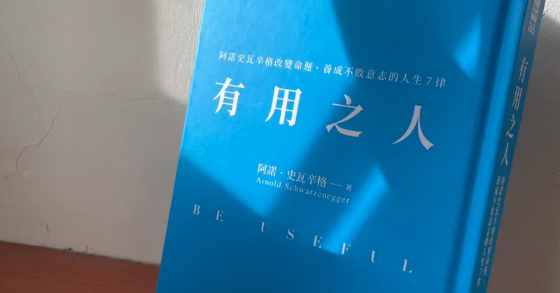
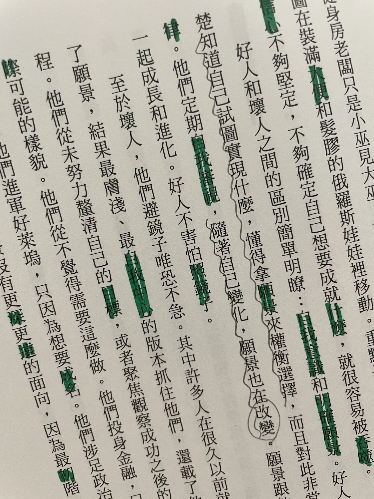

願景是生命的錨 讀《有用之人》

「願景」，可以是俗稱的目標、夢想，是想過的生活、想成為的人／模樣。可以是模糊的，在實踐中慢慢收斂、淬鍊而清晰。
想想自己的希望，自己的喜怒，喜歡什麼，想追求什麼，到哪裡去旅行，遇見什麼樣的人，得到什麼樣的經驗。這一切的過程都會形成你們的未來。－《獵人》雲谷師父
在《獵人》舊版動畫中，當小傑和奇犽完成天空競技場的修練、準備離開時，雲谷師父對他們所說的這段話，也一直提醒著我。過往我並沒有願景的概念，只是一直苦苦追尋一個夢想、一件想做的事、想投入的志業，幻想著當夢想被定義出來，我一定能奮不顧身、踏實地投入其中。
幸運也是不幸地，在我始終無法求得夢想的漫長時間裡，這段話是我的明燈。也在閱讀《有用之人》、漸漸將夢想（或將其修改為更為具體、不俗氣的「願景」）釐清之後，才發現我的願景其實一直如影隨形、深入日常，只是我沒察覺而已。
書中關於願景的幾個我認為重要的概念整理如下：
明確願景所能帶給你的：解析一個決定對你是好是壞，端視這個決定讓你距離想要的生活更近還是更遠。
好人清楚知道自己試圖實現什麼，懂得拿願景來權衡選擇，而且對此非常自律。他們定期自我審視，隨著自己變化，願景也在改變。
保持好奇，渴求資訊，打開胸懷，善用知識。
如果有機會閱讀這本書，會發現作者的自律與執著似乎超乎常人，但或許也可以解讀是他有非常明確且清楚的願景，其帶來了強烈的驅動力。
本文主要節錄書中幾個重要段落，加上自己的經驗及想提醒自己的部分，特別關於貫徹、全力以赴、行動的地方，就是我最最缺乏的。提醒自己要檢視自己是不是不夠努力、不要替自己找藉口，為自己勉強一下下。（而這次不是為別人而勉強自己，是為自己！）
以頂尖運動員舉例，除了技術，他們能視覺化過程，意思是閉上眼睛，可以想像／看見比賽過程。
這裡的願景視覺化，指的應該是「運動心像(motor imagery)」。我在攀岩訓練的文章當中看過，自己也會在攀爬前觀察路線、擬定路線時刻意訓練（雖然最基本的––透過錄影來修正動作我做得極少）。
滿好奇攀岩會不會相對其他運動，更自然而然地需要訓練運動心像？因為體力有限，無法一直上牆透過肉身測試，而更加依賴憑想像來嘗試。
不在鏡子前看著自己運動，就無法知道動作是否正確。肌肉量夠不夠充足、線條夠不夠明顯。
要好好地看著自己，客觀而誠實。願意面對錯誤，才有機會改正、變好；也要欣然接受好的部分，認識優勢、建立自我認同，同時才曉得如何以省力又有效的方式鞭策自己，謙卑且自信。
不在場的人會透過靜態的姿勢（比如雜誌）認識你，但會來到現場見你的那些在場的人、那些重要的人，會觀察並評價你的一舉一動，以及你在這些關鍵時刻之間的過渡。這是一個完美的隱喻。生活不是只有高潮或重大時刻。
我喜歡這裡提到的「過渡」，看似不重要、普通的、作為銜接的部分，或許就是最可能鬆懈、露出破綻的地方。有沒有可能……「過渡」是他們如何評價你的關鍵、也是成敗的關鍵？
而要能不在枝微末節的地方露出破綻，「展現真實的自我」會是最為輕鬆的選擇，而非扮演一個角色需要裝模作樣。
即使最終棋差一著也無妨，因為你很可能在過程中完成相當了不起的事。
就像不要害怕嘗試的失敗一樣，就算最終結果不盡圓滿、是失敗的，一定有一些東西沒有失敗。比如未能在奧運上拿到金牌，但自己的奮鬥故事鼓舞了許多人投入和重視該項運動，而自己做為選手所培養出的毅力，即使成為教練、去了其他產業，也比別人更能堅持、有更強大的抗壓力，正好想到《重版出來！》就是一部講述柔道選手因為受傷無法繼續追逐參加奧運的夢想，而轉換跑道進入出版社工作的作品，原作漫畫和日劇都非常好看！
我也喜歡書後來提到「健身時，每次把自己操到力竭就是一種失敗」，看似每次都如此不圓滿，其實每一次自己都距離目標更近了。
沒有B計畫，B計劃就是成功完成A計畫。……對每個偉大的夢想來說，B計畫是危險的，是為失敗而存在。
比起實踐計畫時，提醒自己「要全力以赴！」，我更想提醒自己在實踐之前、制定計畫時，「不要選擇輕鬆的路」。
我熱衷於貫徹。……重要的事情往往既不簡單也不直接，幾乎總是依賴時機、他人和諸多變異因素。
用進廢退。
這對我而言是巨大的提醒，因為我就是三分鐘熱度的王者（少數我可以如此肯定的時刻…），但這特別讓我回想起過去學習的總總，比如曾學過法文、西文、一些投資的資料等等，最後都沒有下文、沒有所產出或結果，比如因此而交個外國朋友、考取檢定考試、投入其他投資創造收入等等。未來如果要重新往下學習，勢必得一定程度地重新複習，這些時間都是令人感到可惜的浪費。
我選擇砌牆工作，是因為那就像額外的重量訓練。
作者提到他還有其他工作，用來賺錢或是用來為未來省錢。
這件事很值得想一想。最好的情況是「其他工作」還是對達成願景有幫助的，但如果沒有這麼棒的選擇，就要留意避免選擇會讓你對願景「分心」的工作。
我自己也非常熱愛這樣––「做一件事情帶來多重的好處」，砌牆既可以賺錢，也同時是重量訓練。
或比如他在後面段落在講助人時所提到的例子，美國作家David Sedaris一邊散步一邊撿垃圾，撿到有垃圾車以他命名、還跟英國女王喝下午茶。一邊散步一邊撿垃圾，一邊運動一邊讓環境變好。這雖然無關願景，但滿足自我需求的同時，如果只要花一點幾乎是對自己毫無損失的力氣，就能幫助別人、美化環境……等等，這些累積，輕易且不知不覺地變成了自己的一部分收穫，甚至成就。不覺得很划算嗎？
將願景呈現給世界的方式，就好像它已經實現，促使你當下開始努力，非讓它成真不可。
一個先畫大餅，再逼自己把大餅實現的概念！

留言
電子郵件不會公開，只用來辨識留言者。第一次留言會先經過審核，之後同一個電子郵件的留言會直接顯示。本留言區以 Cloudflare Turnstile 防止垃圾留言。